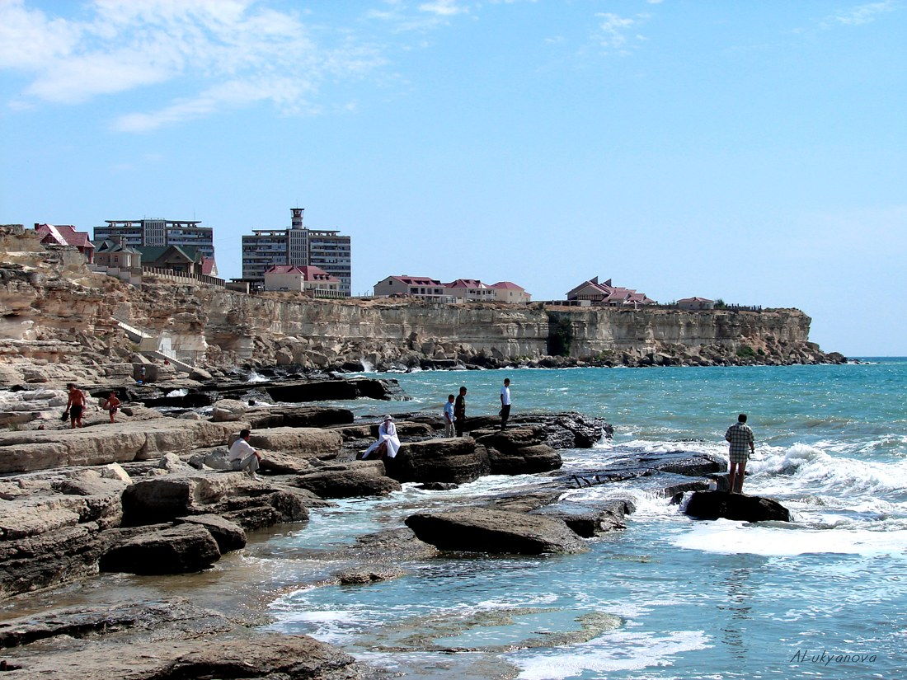

Kaspiydagi mashqlarda 14 harbiy halok boʻldi: Qozogʻistonda mudofaa vaziri isteʼfoga chiqarildi, besh zobit hibsga olindi
24-sentabrdagi fojiadan soʻng Prezident Qasym-Jomart Toqayev mudofaa vazirini almashtirdi; Harbiy-dengiz kuchlari shtab boshligʻi va boshqa zobitlar xizmatga beparvolik boʻyicha tergov ostida.

Qozogʻiston 24-sentabrda janubi-gʻarbiy mintaqada oʻtkazilgan "Kaspiy-2026" (Caspian Defense) harbiy mashqlari chogʻida halok boʻlgan harbiylarni motam tutmoqda. Mudofaa vazirligi maʼlumotiga koʻra, havoning keskin yomonlashuvi va kuchli shamol tufayli mashqlar paytida 17 harbiy dengizga tushib ketgan. Uch nafari qutqarilgan, qolgan 14 nafari halok boʻlgan — ularning jasadlari keyingi kunlarda topilgan.
Motam va isteʼfo
Prezident Qasym-Jomart Toqayev halok boʻlganlar oilalariga hamdardlik bildirib, 25-sentabrni butun mamlakat boʻylab motam kuni deb eʼlon qildi. Ikki prezident farmoni bilan Mudofaa vaziri Dauren Qosanov vazifasidan ozod etildi; uning oʻrniga ilgari maxsus operatsiyalar kuchlari qoʻmondoni boʻlgan Aydos Myrzaxmetov tayinlandi.
Hibsga olingan zobitlar
Harbiylar oʻlimi bilan bogʻliq holda Qurolli Kuchlarning oliy va katta qoʻmondonlik tarkibidan besh vakil hibsga olindi. Ular orasida Harbiy-dengiz kuchlari shtab boshligʻi — Bosh qoʻmondonning birinchi oʻrinbosari, ikki harbiy qism komandiri, dengiz piyodalari rotasi komandiri va patrul kateri komandiri bor. Tergov xizmat vazifasiga beparvolik hamda kemani boshqarish qoidalarini buzish — bu odamlar oʻlimiga olib kelgan — moddalari boʻyicha olib borilmoqda.